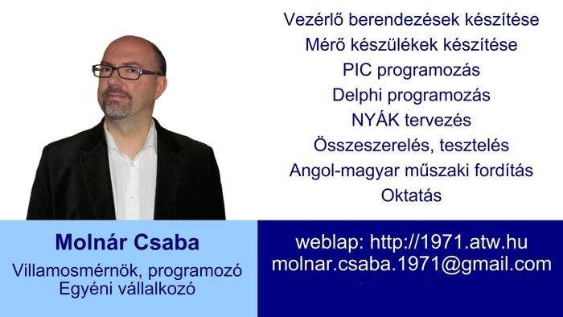
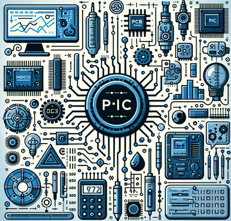

1971-ben születtem Orosházán.
2000-2022-ig Budapesten laktam, majd visszaköltöztem Orosházára.
Villamos fejlesztőmérnökként és programozóként dolgozom, ipari
mérőkészülékeket fejlesztő- és gyártó cégnél.
Az egyéni vállalkozást mellékállásban végzem, a főállású munkaidőm
után és hétvégén.
Hobbi jelleggel videókat készítek, az elektronika témájú
videócsatornám a Youtube-on megtekinthető, jelenleg több, mint 1700
feliratkozónál tartok.

Szakterületeim (több, mint 25
évesfejlesztőmérnöki tapasztalattal):
- Mikrokontrollerekkel
megvalósítottvezérlések és mérőkészülékek.
- PIC kontrollerek programozása.
- Delphi programozás. (Főleg elektronikai vezérlés, mérés
témakörben. Adatbázis kezelésben és
WEB-es programokban nem vagyok jó, erre vannak tőlem sokkal
jobb szakemberek...)
- Nyomtatott áramkörök (NYÁK) tervezése és kivitelezése.
- Speciális szakterületek: biztonságtechnika, méréstechnika,
multimédia, célkészülékek tervezése és megvalósítása.
Számos mikroelektronikai fejlesztést és programokat készítettem
többféle mikrokontrollerre és processzorra építve, komplett
rendszerektől az egyedi megrendelésű célberendezésekig. Emellett PC
programozói munkákat is végeztem adatbáziskezelés, ipari grafikus
megjelenítő program, vezérlőprogram és multimédia témakörökben. Iskolai
éveim alatt Commodore számítógépekhez készítettem segédprogram
kártyákat, melyek használhatóságukat tekintve világviszonylatban is
a legjobbak közé tartoznak.
Korábban a saját fejlesztésű áramköreim vezérlésére a 8051 alapú
kontrollereket (és ezek korszerűbb változatait) valamint Z80 processzort
használtam, assembly nyelven írtam programokat. Jelenleg a 8 bites,
PIC18Fsorozatú és a 32 bites PIC32MM mikrokontrollerek
a kedvenc eszközeim, az évek alatt szinte ezek szakértője
lettem.
Jelen
vállalkozásom
keretein belül elsősorban a saját fejlesztésű, vezérlő funkciókat
ellátó, PLC-szerű készülékeimet árusítom (a teljeskörű, működtető
program megírását is vállalom, folyamatábrával, dokumentációkkal,
garanciával), ezek segítségével meg tudja valósítani gyártó gépek
vezérlését, ház-, iroda-, munkahely vezérlését, speciális igények
alapján elképzelt vezérléseket, mérést, adatgyűjtést.
Másodsorban saját tervezésű és kivitelezésű áramköröket
árulok, amelyeket azért hoztam létre, hogyhiánypótló funkciót
töltsenek be a magyar mikroelektronikában, főként a fejlesztők
munkáját segítve.
Harmadsorban: ha van bármilyen ötlete (akár áramkör, akár szoftver),
amit hozzáértés híján nem tud megvalósítani (mert nem ért a NYÁK
tervezéshez vagy a mikrokontroller programozásához), akkor keressen
bizalommal.
Eddig számos, speciális, a megrendelő elképzelései alapján
körvonalazódott feladatot oldottam meg, magas szakmai
kritériumoknak megfelelve.